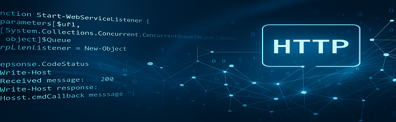

Creating a DAS Listener in PowerShell
Reference RA 473
Why PowerShell?
PowerShell is a powerful and flexible scripting language built on the .NET platform. It is widely used for automation, system administration, and cross-platform scripting.
Choosing PowerShell for implementing a DAS (Data Analytics Solution) listener provides several benefits:
- Native HTTP server support via
HttpListener - Built-in JSON parsing and concurrent collections
- Asynchronous task execution with jobs and queues
- Cross-platform compatibility on Windows, Linux, and macOS via PowerShell Core
This makes PowerShell an excellent choice for building lightweight network listeners or service simulators for testing environments.
General Technical Info
| Component | Version |
|---|---|
| Language | PowerShell |
| Framework | 5.1+ / Core |
| Environment | Windows, Linux, macOS |
Overview of the Program Structure
This RA provides a simple but effective implementation of a DAS message listener using the following components:
DASMessage.ps1
A class definition used to wrap incoming messages into structured objects containing the URL, the message name, and the JSON body.DASListener.ps1
A function that starts a local web listener, accepts HTTP messages, and enqueues them for processing using a concurrent queue.CallbackExample.ps1
A sample function to be executed whenever a message is received. It demonstrates how to handle and inspect incoming data.Run-DAS.ps1A script to launch the DAS listener and message consumer interactively.
It displays messages in real-time and stops when you pressq.
Logs are saved to$env:TEMP\\das.logif enabled. This modular architecture makes it easy to expand, reuse, and integrate into various AMP/DAS validation and testing flows.
Architectural Diagram
{kind=link}
This documentation is part of the Teradyne Archimedes Reference Architecture series.